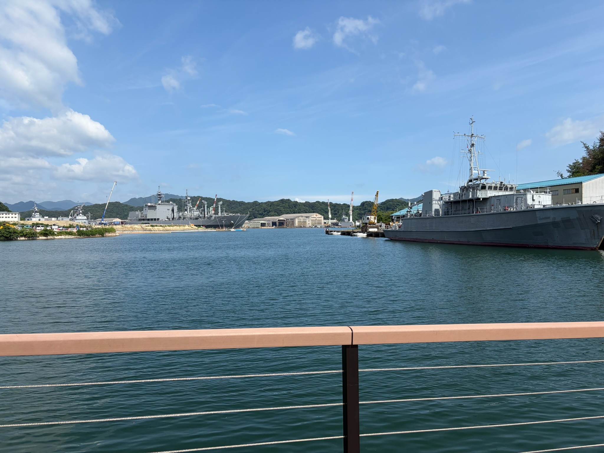
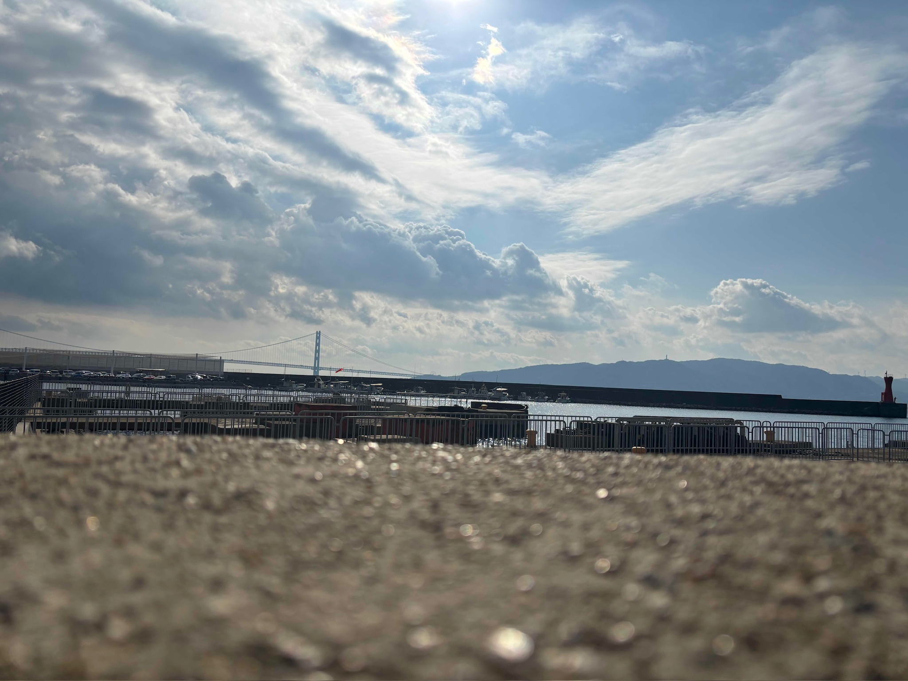
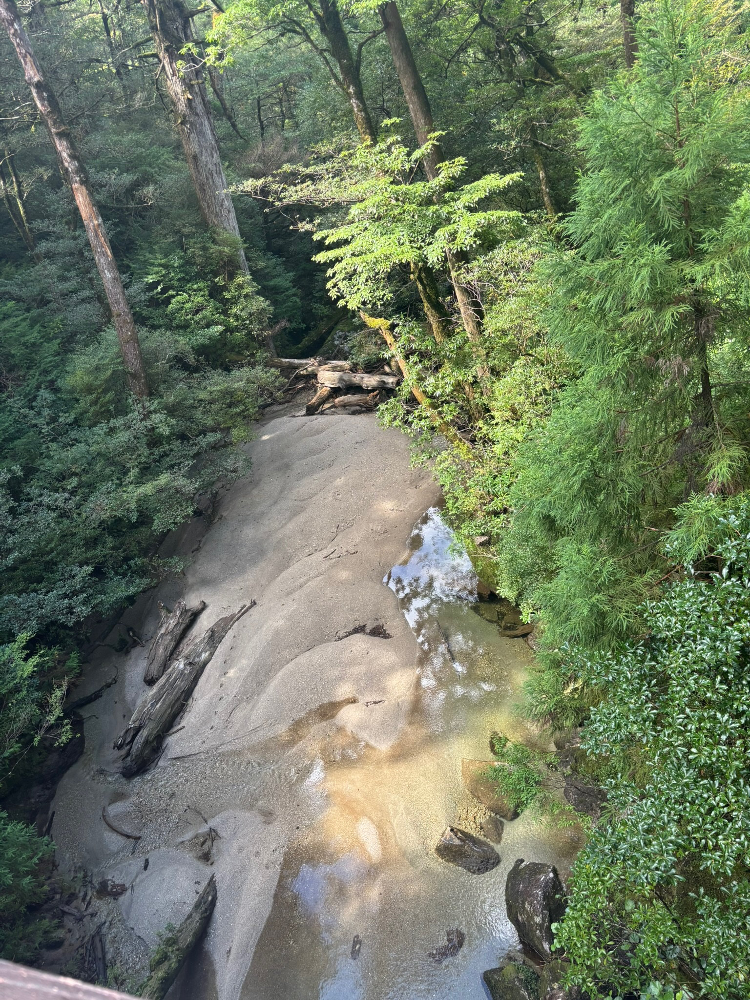

東舞鶴/赤煉瓦パーク
東舞鶴には、二条駅から特急まいづるで約1時間半ぐらいでつきました。東舞鶴では、赤煉瓦パークに行って軍艦カレーや、
泊まったホテルの近くの店で生牡蠣や、魚の刺身などを食べました

明石/明石港付近
明石に行った時の写真です。明石では明石焼きや、近くの商店街で売っていた魚を食べていました。
明石では滋賀からJR線新快速で約2時間ぐらいかかりました

屋久島/屋久島総合自然公園
屋久島には、高校の時のスクーリングで行きました。伊丹空港から屋久島行きの飛行機に乗って
約3時間乗っていきました。帰りは屋久島から鹿児島行きの高速船に乗って鹿児島空港から伊丹空港に飛行機で帰りました。